Creates a two-dimensional ordination plot from a reduced dimension result
stored in a
SingleCellExperiment
object. Samples can be coloured, filled, shaped, sized, grouped or faceted
using sample metadata or feature abundances, and additional graphical
elements such as confidence ellipses, centroids, vectors and density
estimates can be added.
plotOrdination(x, ...)
# S4 method for class 'SingleCellExperiment'
plotOrdination(x, dimred, ...)a
SummarizedExperiment
object.
Additional parameters for plotting.
ncomponents: integer vector of length 2 or
integer scalar. Specifies which ordination components are plotted.
If a scalar is provided, the first two components are used.
(Default: 2L)
colour.by: NULL or character scalar. Specifies a
variable from colData(x) or a feature from rownames(x) used
to colour observations. Feature abundances are taken from
assay.type. (Default: NULL)
fill.by: NULL or character scalar. Specifies a
variable from colData(x) or a feature from rownames(x) used
to fill observations or ellipses. Feature abundances are taken from
assay.type. Cannot be used together with
add.density = TRUE. (Default: NULL)
shape.by: NULL or character scalar. Specifies a
categorical variable from colData(x) used for point shapes.
(Default: NULL)
size.by: NULL or character scalar. Specifies a
variable from colData(x) used for point sizes.
(Default: NULL)
group.by: NULL or character scalar. Specifies a
categorical variable from colData(x) used for grouping when drawing
ellipses, centroids and centroid vectors. (Default: NULL)
linetype.by: NULL or character scalar.
Specifies a categorical variable from colData(x) used for ellipse
line types. (Default: NULL)
pair.by: NULL or character scalar. Specifies a
variable from colData(x) identifying observations that should be
connected by lines. (Default: NULL)
sort.by: NULL or character scalar. Specifies a
variable from colData(x) used to order observations before drawing
connecting lines. (Default: NULL)
facet.by: NULL or character scalar. Specifies a
categorical variable from colData(x) used to split the plot into
facets. (Default: NULL)
assay.type: character scalar. Name of the assay used
when colour.by or fill.by specifies a feature.
(Default: "counts")
add.points: logical scalar. Whether to draw sample
points. (Default: TRUE)
add.ellipse: logical scalar. Whether to draw confidence
ellipses around groups. (Default: FALSE)
add.density: logical scalar. Whether to draw a
two-dimensional density estimate in the background.
(Default: FALSE)
add.centroids: logical scalar. Whether to draw group
centroids. (Default: FALSE)
add.centroids.lines: logical scalar. Whether to connect
observations to their group centroids. (Default: FALSE)
add.vectors: logical scalar. Whether to draw vectors
from the global centroid to group centroids.
(Default: FALSE)
add.rotation: logical scalar. Whether to draw rotation
(species score) coordinates if available in the ordination result.
(Default: add.species)
add.species: logical scalar. Alias for
add.rotation. (Default: FALSE)
add.expl.var: logical scalar. Whether to append the
percentage of explained variance to the axis labels when available.
(Default: FALSE)
scales: character scalar. Scaling used for faceted
plots. Passed to ggplot2::facet_wrap(). (Default:
"fixed")
xlab, ylab: character scalar. Axis labels.
Defaults to the ordination component names.
panel.by.eigen: logical scalar. Whether to scale the
panel aspect ratio according to the eigenvalues of the ordination when
available. (Default: TRUE)
point.shape: Shape used for points.
(Default: 19)
point.alpha: numeric scalar. Transparency of points.
Must be between 0 and 1. (Default: 0.4)
ellipse.alpha: numeric scalar. Transparency of ellipse
fills. Must be between 0 and 1. (Default: 0.2)
ellipse.linewidth: numeric scalar. Line width of
ellipse borders. (Default: 0.5 or 0 when
fill.by is specified.)
ellipse.linetype: Integer specifying the ellipse line type.
(Default: 1)
confidence.level: numeric scalar. Confidence level used
for ellipse calculation. Must be between 0 and 1.
(Default: 0.95)
adjust: numeric scalar. Multiplicative adjustment for
the bandwidth used in the background density estimate.
(Default: 1)
character scalar. Name of the reduced dimension result
stored in reducedDim(x) to visualize.
A ggplot2 object.
This function provides a unified interface for visualizing ordination methods
such as PCA, PCoA, MDS, t-SNE, UMAP, RDA and CCA. The plotted coordinates are
retrieved from a reduced dimension result stored in
reducedDim(x).
data("Tito2024QMP")
tse <- Tito2024QMP
# Compute relative abundances and an MDS ordination
tse <- transformAssay(tse, method = "relabundance")
tse <- addMDS(tse, assay.type = "relabundance", method = "bray", ncomponents = 50)
# Basic ordination plot
plotOrdination(tse, "MDS")
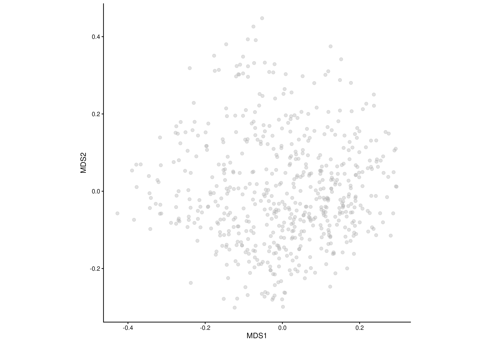
# Colour samples by a sample-level variable
plotOrdination(tse, "MDS", colour.by = "diagnosis")
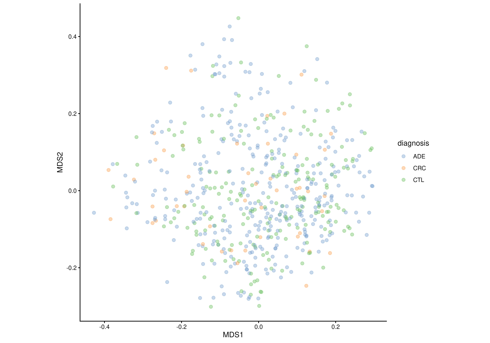
# Colour samples by the abundance of a single feature
plotOrdination(
tse, "MDS",
colour.by = rownames(tse)[1],
assay.type = "relabundance")
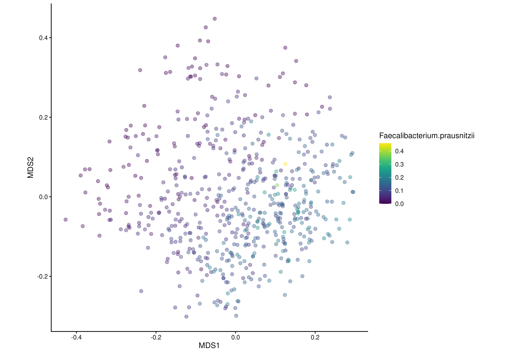
# Use multiple aesthetics simultaneously
plotOrdination(
tse, "MDS",
colour.by = "diagnosis",
shape.by = "colonoscopy"
)
#> Warning: The shape palette can deal with a maximum of 6 discrete values because more
#> than 6 becomes difficult to discriminate
#> ℹ you have requested 13 values. Consider specifying shapes manually if you need
#> that many of them.
#> Warning: Removed 493 rows containing missing values or values outside the scale range
#> (`geom_point()`).
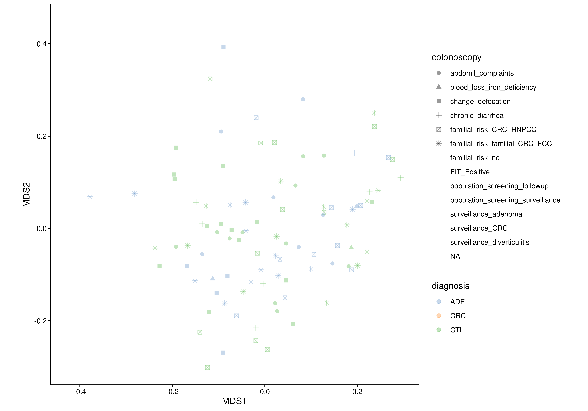
# Add confidence ellipses
plotOrdination(
tse, "MDS",
colour.by = "diagnosis",
group.by = "diagnosis",
add.ellipse = TRUE
)
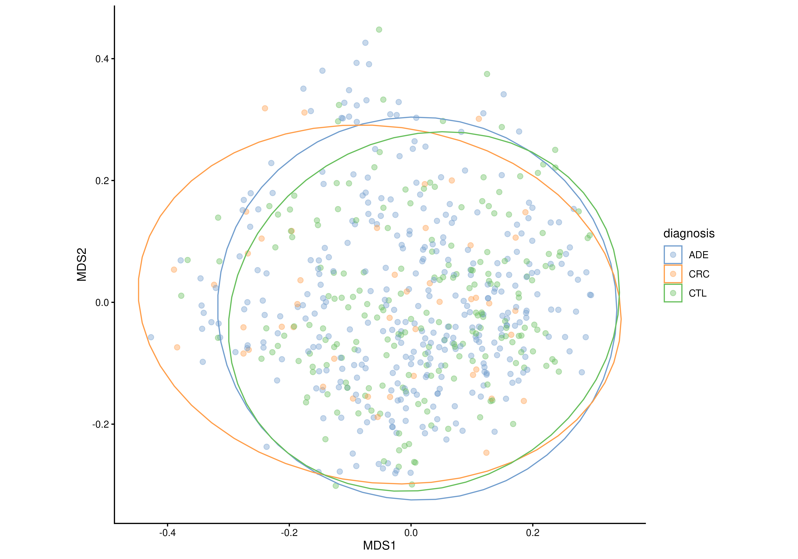
# Fill ellipses instead of colouring them
plotOrdination(
tse, "MDS",
fill.by = "diagnosis",
group.by = "diagnosis",
add.ellipse = TRUE
)
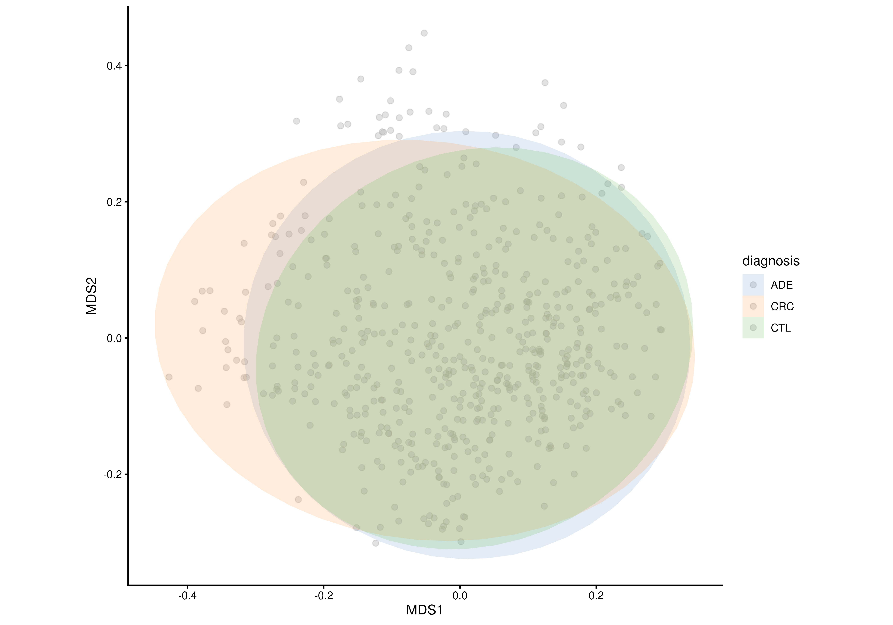
# Show explained variance in the axis labels
plotOrdination(
tse, "MDS",
colour.by = "diagnosis",
add.expl.var = TRUE
)
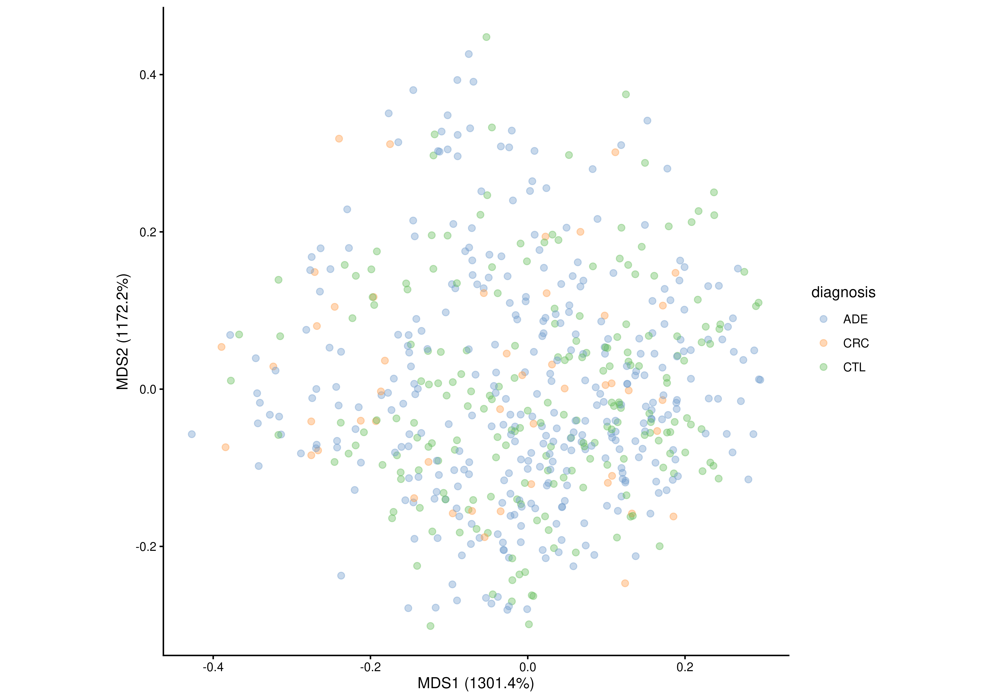
# Add group centroids
plotOrdination(
tse, "MDS",
colour.by = "diagnosis",
group.by = "diagnosis",
add.centroids = TRUE
)
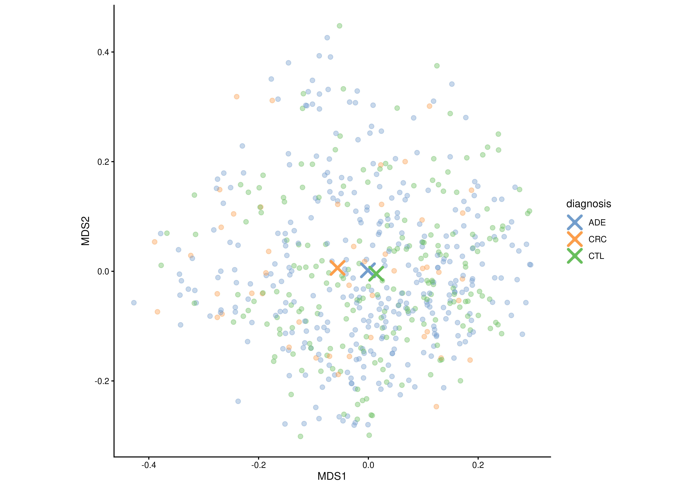
# Connect samples to their group centroids
plotOrdination(
tse, "MDS",
colour.by = "diagnosis",
group.by = "diagnosis",
add.centroids.lines = TRUE
)
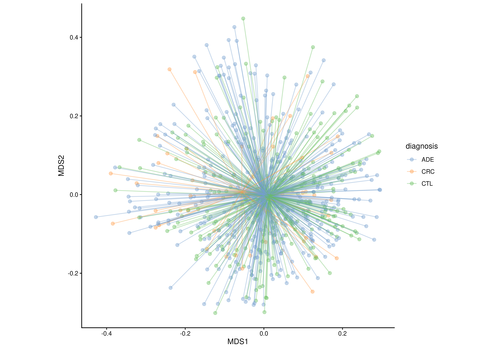
# Show vectors from the global centroid to each group centroid
plotOrdination(
tse, "MDS",
colour.by = "diagnosis",
group.by = "diagnosis",
add.vectors = TRUE
)
#> Warning: Using `size` aesthetic for lines was deprecated in ggplot2 3.4.0.
#> ℹ Please use `linewidth` instead.
#> ℹ The deprecated feature was likely used in the miaViz package.
#> Please report the issue at <https://github.com/microbiome/miaViz/issues>.
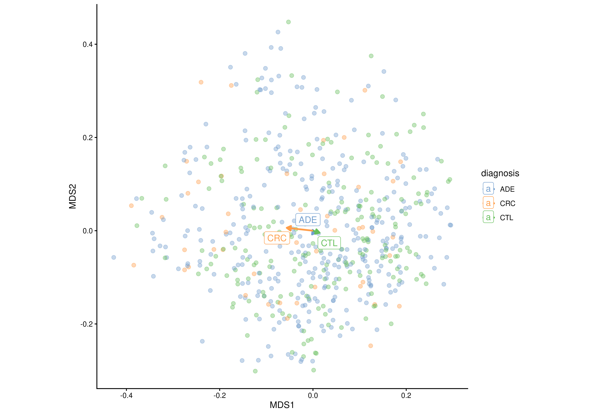
# Draw a background density estimate
plotOrdination(
tse, "MDS",
add.density = TRUE
)
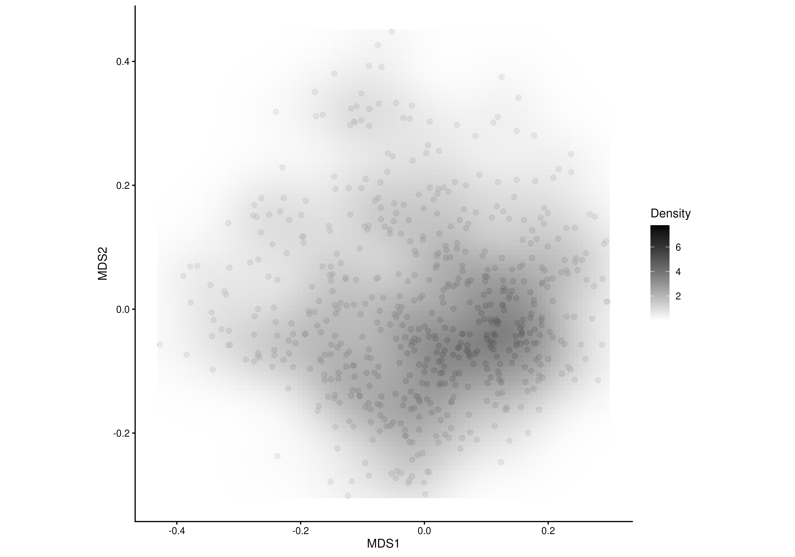
# Split the plot into facets
plotOrdination(
tse, "MDS",
colour.by = "diagnosis",
facet.by = "colonoscopy"
)
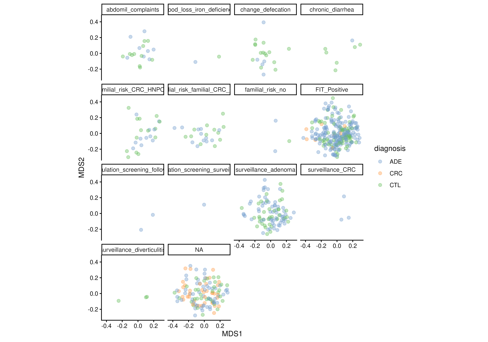
# Plot different ordination components
plotOrdination(
tse, "MDS",
ncomponents = c(2, 3)
)
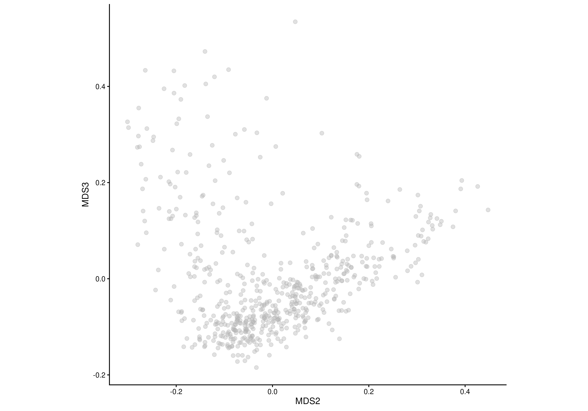
# Customize point appearance
plotOrdination(
tse, "MDS",
colour.by = "diagnosis",
point.shape = 17,
point.alpha = 0.8
)
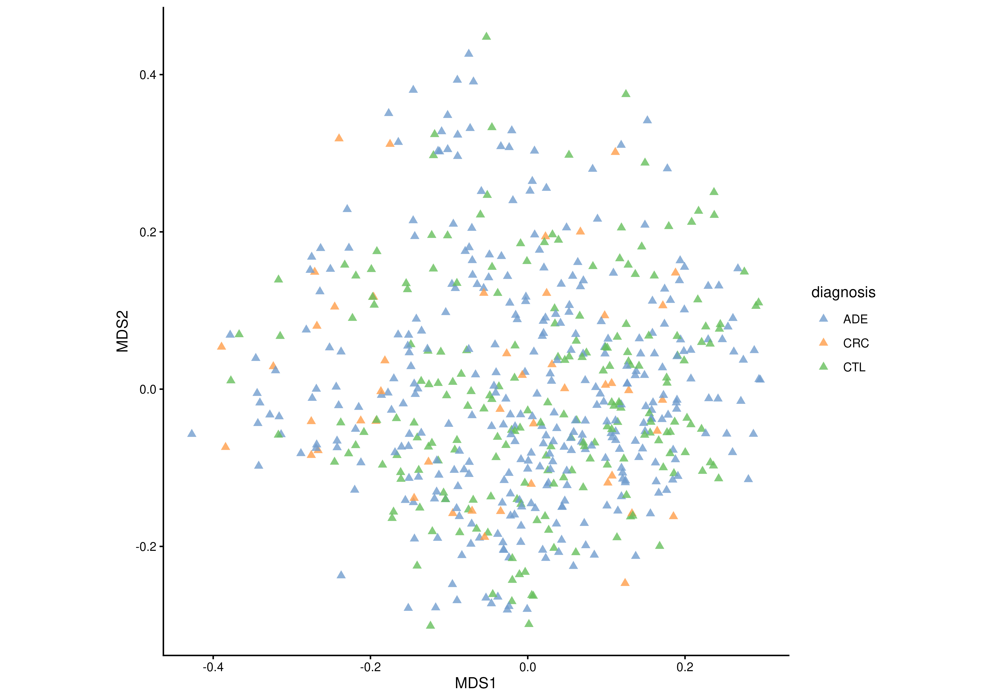